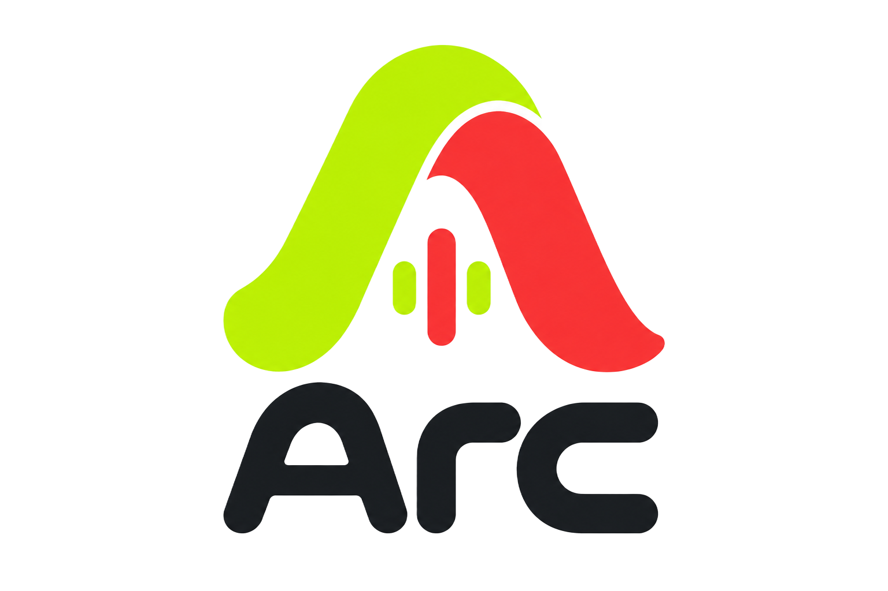

Arc ChatO Arc Chat lê o chat da sua live em voz alta, com vozes neurais em português — sem travar seu PC e sem depender de navegador.
Baixar Arc ChatToda mensagem, presente e novo seguidor pode ser narrado em tempo real, automaticamente.
Mais de 10 vozes naturais, nada de robozinho feio — escolha a que combina com seu canal.
Esquilo, vilão, narrador, robô e mais — troca o tom da sua live com um clique.
O app toca o áudio sozinho. Só capturar o som dele no OBS ou TikTok Live Studio.